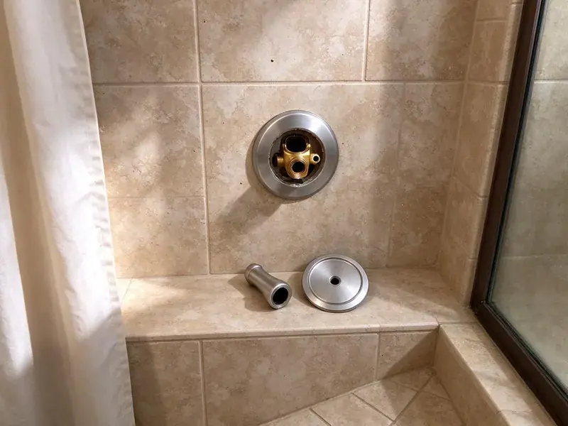

Bathroom Plumbing in Clearwater, FL
From toilet repairs to full shower valve replacements, our plumbers keep bathrooms in Clearwater, FL running without drips.
- Clean Job Sites
- Written Pricing
- Parts on Every Truck
- Toilets, Faucets and Showers

Bathroom Plumbers Serving Clearwater, FL
We bring cartridges, flappers, wax rings and valves so most bathroom repairs are done in one visit.
Bathroom Plumbers for Clearwater, FL Homes
HDF Plumbing knows bathrooms see heavy use and that water quality affects how long fixtures last. Many wells in Florida produce water with a sulfur smell or high iron, which often calls for filtration to protect fixtures and appliances. Minerals clog cartridges and aerators. Chlorine in treated water also softens rubber flappers over a few years, so we repair what can be repaired and tell you when a replacement will save money over another round of parts.
Some of what we do:
- Pressure-balance shower valve replacement
- Faucet and shower cartridge repair
- Faucet and shower cartridge replacement for Moen, Delta and Kohler

Additional Bathroom Plumbing Services in Clearwater, FL
From toilets to showers, our bathroom plumbing team in Clearwater, FL repairs, installs, and replaces every fixture with clean, code-compliant work.


Customers
Why Choose HDF Plumbing for Bathroom Plumbing in Clearwater, FL?
Clear communication matters on small jobs too. We show you the worn part, what it costs and how long it will take.
- Tidy Work, We protect floors and tile and clean up before we leave.
- Regional Experience, We know the common plumbing issues in Florida, including hard water and settling.
- Licensed and Insured, Our plumbers are licensed, insured and kept current on code and new fixtures.
Citywide Coverage
Anywhere in Clearwater, FL, our plumbers can reach you quickly. Next-day is common. Plumbers are spread around town during the day, so whoever is closest can take your call, and simple jobs like a flapper or cartridge often get done the same afternoon.
Experienced Team
Between them, our plumbers have repaired and installed thousands of toilets, faucets and showers. Brand quirks are familiar. They know which cartridge fits which handle and how to find discontinued parts, so you don't replace a fixture that needed one piece.
Safety-First Approach
Every bathroom job follows Florida plumbing codes. Small jobs included. That means anti-scald protection on shower valves, rated supply lines and proper venting on drains, which protects your household from burns, leaks and sewer gas long after we leave.
Trusted Certified Clearwater Plumbing Services Professionals
At HDF Plumbing, we are proud to offer certified plumbing services throughout Clearwater, FL. Those papers on the wall mean something. Our plumbers hold recognized industry credentials, and they follow strict safety and quality rules on every repair, installation and maintenance call we run.
Call Us Now PHCC Plumbing Contractor Recognition
PHCC Plumbing Contractor Recognition Better Business Bureau (BBB) Accreditation
Better Business Bureau (BBB) Accreditation Angi Certified Pro
Angi Certified Pro ISO 9001 Quality Management Certification
ISO 9001 Quality Management CertificationBathroom Plumbing Repair and Installation in Clearwater, FL
Bathtub Faucet and Drain Replacement in Clearwater
Tub spouts and faucets wear out from scale and daily use. Some leaks show up downstairs. Spouts, diverters and trim get replaced, two-handle valves get upgraded to pressure-balance units, and leaking drains and overflows get fixed.

Urinal Installation and Commercial Bathroom Plumbing in Clearwater
Commercial restrooms take a beating every day. Parts wear faster. HDF Plumbing installs urinals with the right supply and drain connections under commercial plumbing code, and we repair flushometers, sensors and drains in busy restrooms so you are not shutting a room down for days. Clearwater businesses get flexible scheduling.
Toilet Repair and Replacement in Clearwater
Leaks at the base can soak the subfloor for months. Check for a soft floor. The toilet comes up, the flange gets checked and repaired, and a new wax ring goes down so it seals, with flappers or clogs fixed on the same visit. New installs in Clearwater are set level and tight.
Sink Repair and Installation in Clearwater, FL
Leaking drains, broken pop-ups and failed supply lines are the common sink repairs. New vanities too. For remodels, we install undermount, vessel and pedestal sinks with matching faucets and drains, and we replace corroded drain assemblies and P-traps to stop leaks and odors under the vanity. Clean, secure connections protect your cabinetry.
Sink Repair and Replacement in Clearwater, FL
A slow bathroom sink is usually hair and soap in the pop-up. It's a quick fix. Leaking traps and drain nuts get fixed, and cracked sinks get replaced and tied into your existing drain and supplies so the vanity stays dry. Many wells in Florida produce water with a sulfur smell or high iron, which often calls for treatment to protect fixtures and appliances. Aerators and drains in Clearwater, FL homes often need descaling.
Bathtub Faucet Replacement in Clearwater, FL
Old tub faucets drip, stick or just look tired. We replace them. Single-handle and wall-mounted styles go in with a tight seal at the wall, and a worn valve behind them gets replaced too. Local water in Clearwater, FL is hard on tub valves, so we recommend durable models.
Toilet Repair and Installation in Clearwater
A running toilet can waste hundreds of gallons a month. The flapper is usually why. Flappers, fill valves and flush valves get replaced, base leaks get a new wax ring, and cracked or thirsty toilets get swapped for efficient models. Every toilet in your Clearwater home gets bolted level.

Sink Repair and Drain Service in Clearwater, FL
Leaks under a bathroom sink often come from a loose slip nut on the trap. You may never see it. We repair cracked sinks, replace corroded P-traps and pop-up assemblies, and clear stubborn hair and soap clogs with a small cable machine so the sink drains at full speed again. Your Clearwater, FL vanity is checked for water damage.
Bathroom Plumbing Near You in Clearwater, FL
We know the bathrooms in Clearwater homes. Some brands show up everywhere. Since many homes share the same builder fixtures, we often know the cartridge before pulling the handle, saving time.
Searching 'bathroom plumbing near me' in Clearwater, FL? HDF Plumbing runs trucks across town every day. Because the trucks carry flappers, cartridges, wax rings and supply lines, the plumber who shows up can usually fix the problem that visit instead of coming back with parts. Wait times are short.
HDF Plumbing at a Glance
- Fully licensed plumbing team covering Clearwater, FL
- 24/7 emergency service with same-day scheduling
- Clear written estimates, no hidden fees
- 4.9-star rated by 739+ Florida customers
Clearwater Map
Clearwater Information
- Population
- 116,850
- Area codes
- 727/813/941
- Service area
- Clearwater and communities within 40 miles
- Nearby
- Largo, Palm Harbor, Pinellas Park, Town 'n' Country
Many wells in Florida produce water with a sulfur smell or high iron, which often calls for treatment to protect fixtures and appliances. That water is hard on supply lines, stops and cartridges, which is why fixture repairs come up often from Clearwater, FL homes.
Expert Services
Call HDF Plumbing for reliable plumbing work done by licensed pros in Clearwater, FL.
Our Specialized Plumbing Services in Clearwater, FL
At HDF Plumbing, you get every kind of plumbing service from one company across Clearwater, FL. We go from leak detection all the way to full system installations, for homes and commercial buildings, and we do it quickly at a fair price. Explore our core services below:


What to Expect on a Bathroom Plumbing Call in Clearwater, FL
We keep bathroom plumbing straightforward and tidy.
Request a Quote
Call (904) 925-7356 and tell us which fixture needs attention and what you are noticing. We schedule a plumber at a time that works for you.
Inspect and Recommend
A plumber checks the fixture and the plumbing behind it, then explains whether to repair or replace. The written price comes before any work.
Repair or Install
We complete the work with quality parts and test for leaks and proper operation. We tidy the room and haul away old fixtures.
Frequently Asked Questions About Bathroom Plumbing in Clearwater
Minor faucet repairs run about $150 to $300. Toilet swaps cost more. Toilet labor runs $300 to $600 before the fixture, and rerouting pipe or adding a new shower system can top $1,000. We quote before starting.
Moen, Delta, Kohler, American Standard, TOTO and Pfister, plus commercial lines like Sloan and Zurn, all get installed and serviced.
Most drips come from a worn cartridge or seal. Hard water makes it worse. Mineral scale damages cartridges early, and a new cartridge usually fixes it without replacing the faucet.
Often yes, with a wrench and some thread tape. Leaks at the wall are different. Low pressure, water behind the trim or a multi-head system usually means valve work, which is best left to a plumber.
Scale in aerators or showerheads is the most common cause. Check the regulator. A bad regulator, a supply leak or a water heater issue can also do it, and we test at the fixture and the main to narrow it down.
Most repairs take one to three hours. Valves take longer. Faucet fixes and toilet clogs are fast, and toilet swaps or valve repairs can take half a day, with timing given up front.
Replace it if it is cracked, uses more than 1.6 gallons per flush or needs frequent repairs. A new WaterSense toilet can lower your water bill.
Kohler, Moen, Delta, American Standard, TOTO, Pfister and Grohe cover most of what we see. Parts ride on the truck. Since our plumbers know each brand's cartridges and kits, most repairs happen that visit without a special order.
Hear From Customers Who Hired Our Plumbing Experts

Daniel K.
A pipe burst in the garage ceiling at 11 at night. Someone answered on the second ring, and the plumber was in my driveway about fifty minutes later. He shut off the main, cut out the split section, and had water back on before 2 am.
Emergency Plumbing · Tampa, FL
Marcus H.
Grease from the fryer line kept clogging the kitchen drain at my diner. HDF Plumbing hydro jetted the line after closing, showed me the buildup on camera, and set us up on a quarterly cleaning so it does not catch us on a Friday again.
Drain Cleaning · Largo, FLRobert G.
The camera showed a full break in our clay sewer line near the street. HDF Plumbing replaced it with a trenchless pipe burst, so the only digging was two small pits in the yard. They let us watch the footage before and after.
Sewer Line Replacement · Clearwater, FL
Lisa C.
Water was pouring out from under the washing machine on a holiday weekend. HDF Plumbing talked me through closing the valves over the phone and had a plumber at the house within ninety minutes. It was a burst fill hose.
Emergency Plumbing · Palm Harbor, FL
Jessica T.
We were adding a gas range in a kitchen remodel and needed a new line run from the meter. The plumber pulled the permit, ran the pipe through the crawl space, and had it inspected and approved within the week.
Gas Line Repair · St. Petersburg, FLLaura S.
Our 40 gallon tank started leaking from the bottom after thirteen years. The tech hauled the old one out, set a new unit with a fresh expansion tank, and had hot water running in about four hours. He took the old tank with him too.
Water Heater Replacement · Largo, FL